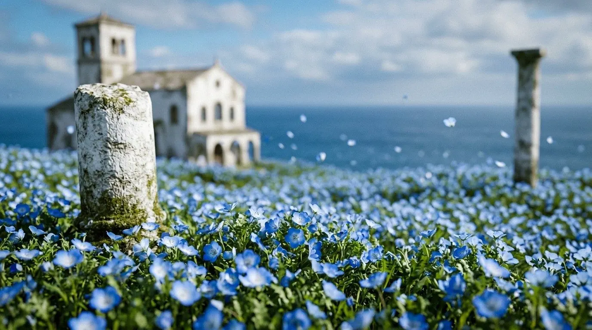
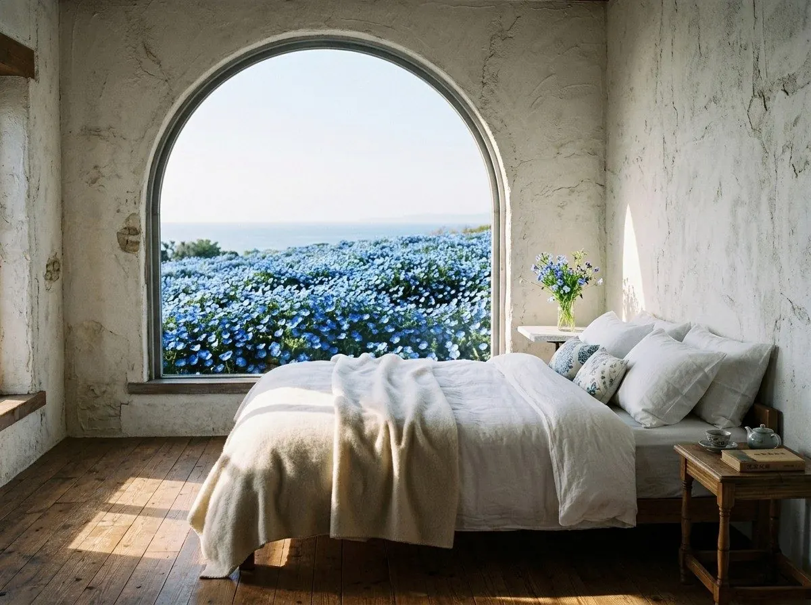
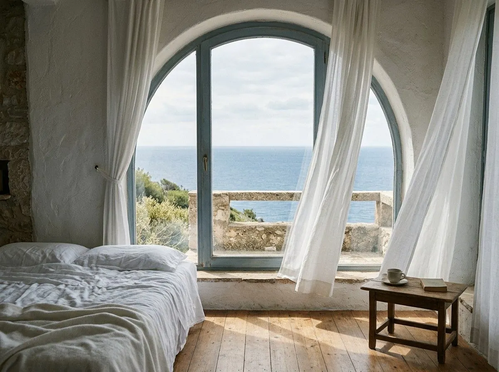
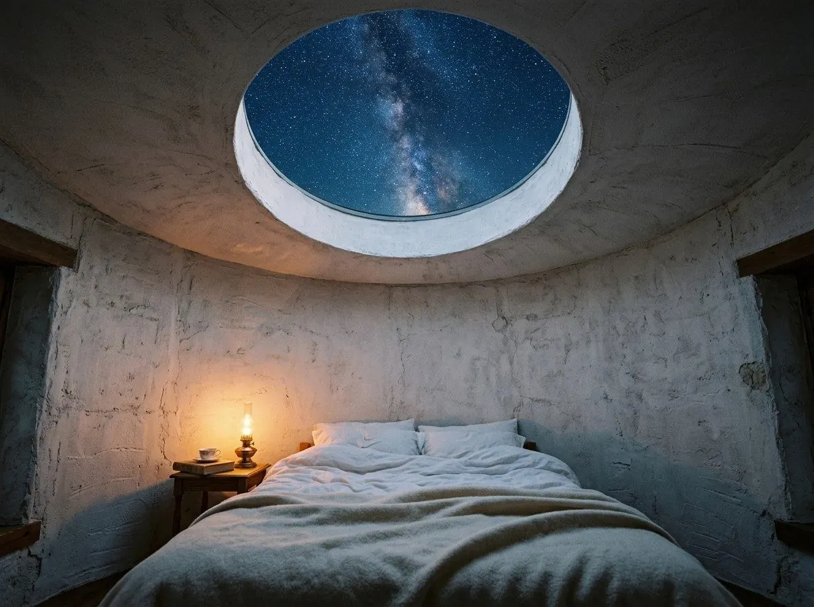
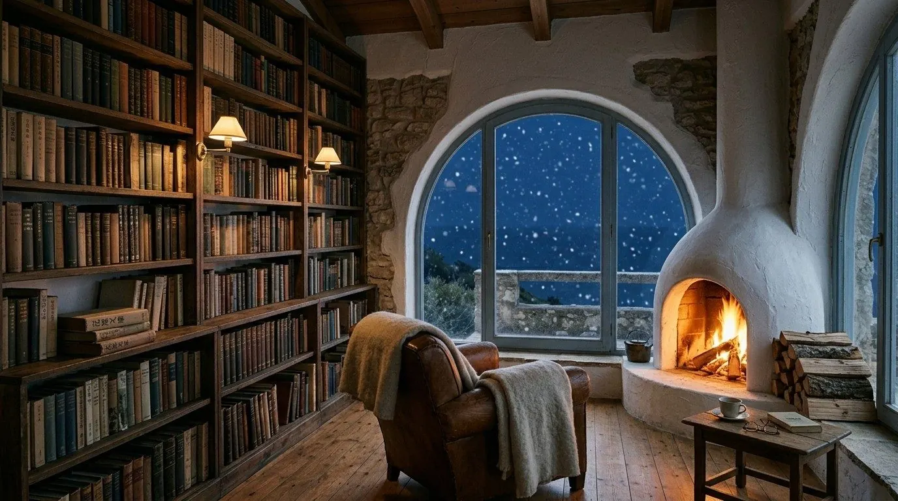
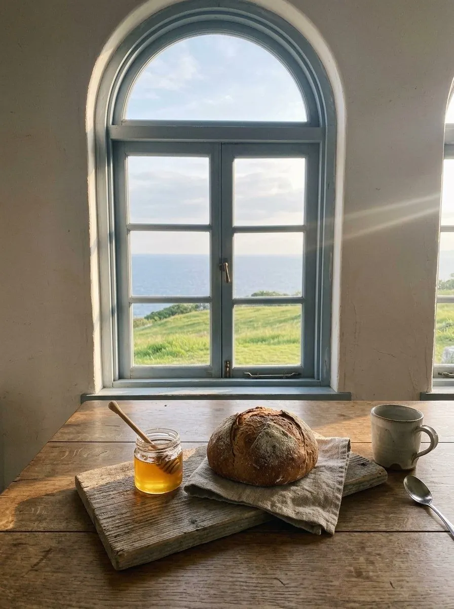
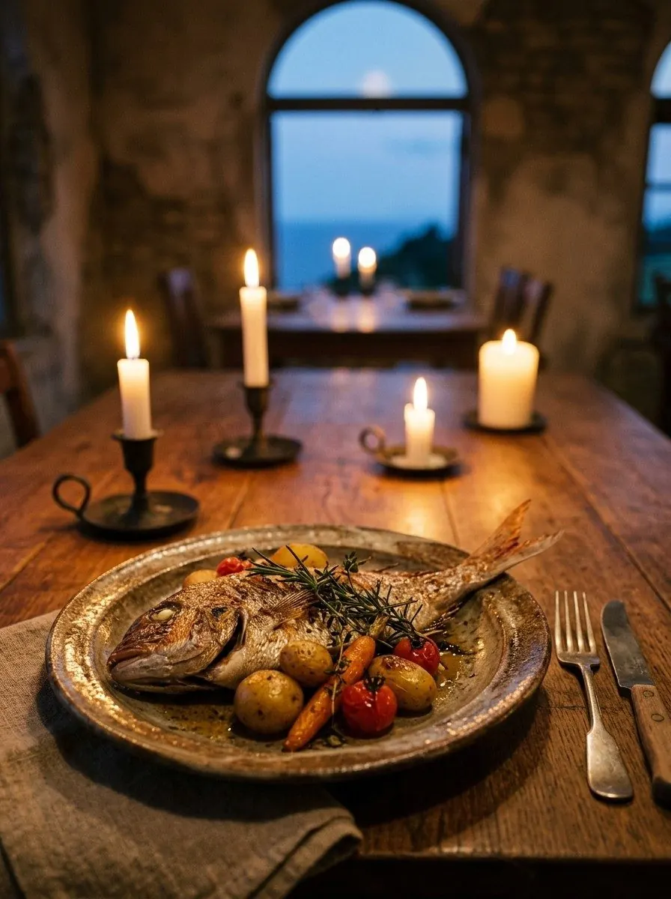
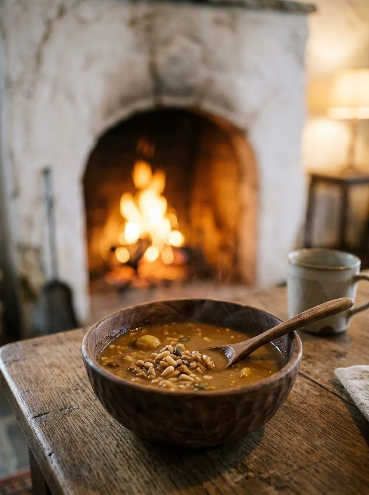

The Hill
丘いっぱいの、青。
春になると、丘は小さな青い花でうめつくされます。
風がふくたびに、海と空と花の境目が、わからなくなる。
An inn for long journeys
Scroll
海の見える丘のうえに、
白い石でできた、ちいさな宿があります。
いつ建てられたのか、知る人はもういません。
ただ、旅の人が来るたびに、
いつもと同じ灯りで、迎えてくれます。

The Hill
春になると、丘は小さな青い花でうめつくされます。
風がふくたびに、海と空と花の境目が、わからなくなる。
宿の裏の小道を下ると、白い砂の入り江があります。
朝の散歩には、ちょうどいい距離です。
丘のあちこちに残る、白い石の柱。
ここに何があったのか、想像しながら歩くのも、旅のたのしみです。
Rooms

01
窓の外は、一面の花畑。朝いちばんの光が入る部屋。
¥28,000〜／1泊2食・1名

02
石のバルコニーから、水平線をひとりじめ。
¥34,000〜／1泊2食・1名

03
塔のいちばん上。天窓から、星をながめて眠る部屋。
¥38,000〜／1泊2食・1名

Fireside Library
宿の奥には、旅の人が置いていった本がならぶ図書室があります。
ぱちぱちと薪のはぜる音を聞きながら、好きなだけどうぞ。
晴れた冬の夜は、中庭で焚き火を。
あたたかい飲みものと毛布は、いつでもご用意しています。
Dining



Seasons
Access
Reservation
※ 練習用につくった架空の宿のため、実際のご予約はできません。